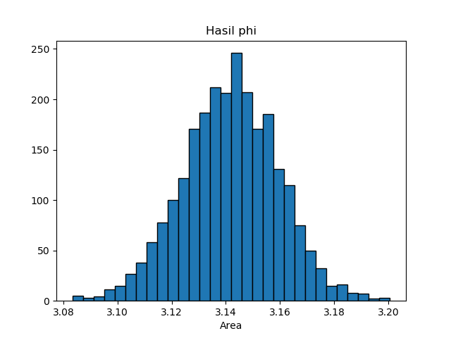
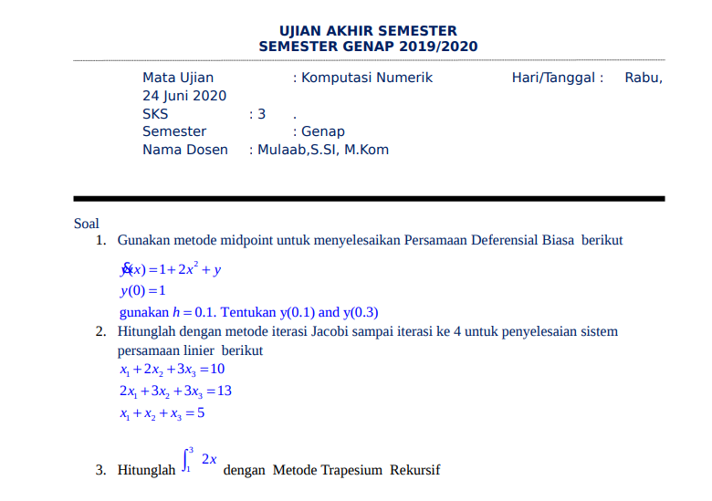

Tugas Komputasi Numerik
Nama : Melyana Febrianti
NIM : 180411100110
Mata Kuliah : Komputasi Numerik 4A
DERET MACLAURIN
Adalah Suatu fungsi f(x) yang memiliki turunan 


Sebenarnya deret MacLaurin masih berhubungan erat dengan Deret Taylor. Deret MacLaurin merupaan kasus khusus dari deret Taylor yaitu deret taylor dengan fungsi yang di ekspansi di sekitar c=0. Deret MacLaurin disebut juga sebagai Deret Taylor Baku
- Formula Deret MacLaurin :

- atau bisa dinyatakan dengan :

Dalam banyak masalah terapan, pilihan basis yang mudah digunakan adalah bilangan irasional e = 2,718...
-
SOAL
tentukan e2x dengan x = 4 dan ekspansi eror < 0,001.
f(x) = (e)^2x
f(0) = 1
f'(x) = (2e)^2x
f”(x) = (4e)^2x
f”'(x) = (8e)^2x
f””(x) = (16e)^2x
-
Program
import math
x=4
cek =1
a = 0
b=1
iter = 1
while cek>0.001:
f_x = 0
f_y = 0
for i in range(a):
f_x += (2**i)*x**i/math.factorial(i)
for j in range(b):
f_y += (2**j)*x**j/math.factorial(j)
cek = f_y-f_x
a+=1
b+=1
print("iterasi ke-",iter,"= ",cek)
iter+=1
iterasi ke- 1 = 1.0
iterasi ke- 2 = 8.0
iterasi ke- 3 = 32.0
iterasi ke- 4 = 85.33333333333333
iterasi ke- 5 = 170.66666666666669
iterasi ke- 6 = 273.0666666666666
iterasi ke- 7 = 364.08888888888896
iterasi ke- 8 = 416.1015873015872
iterasi ke- 9 = 416.1015873015872
iterasi ke- 10 = 369.8680776014112
iterasi ke- 11 = 295.89446208112895
iterasi ke- 12 = 215.195972422639
iterasi ke- 13 = 143.46398161509296
iterasi ke- 14 = 88.28552714774924
iterasi ke- 15 = 50.448872655856576
iterasi ke- 16 = 26.90606541645684
iterasi ke- 17 = 13.45303270822842
iterasi ke- 18 = 6.330838921519444
iterasi ke- 19 = 2.8137061873417224
iterasi ke- 20 = 1.184718394670199
iterasi ke- 21 = 0.47388735786807956
iterasi ke- 22 = 0.18052851728316455
iterasi ke- 23 = 0.06564673355751438
iterasi ke- 24 = 0.022833646454728296
iterasi ke- 25 = 0.0076112154847578495
iterasi ke- 26 = 0.0024355889549951826
iterasi ke- 27 = 0.0007494119863622473
Program Newton Raphson pada Fungsi Non Linear
Newton Raphson Adalah metode pencarian akar suatu fungsi f(x) dengan pendekatan satu titik, dimana fungsi f(x) mempunyai turunan. Metode ini dianggap lebih mudah dari Metode Bagi Dua (Bisection Method) karena metode ini menggunakan pendekatan satu titik sebagai titik awal. Semakin dekat titik awal yang kita pilih dengan akar sebenarnya, maka semakin cepat konvergen ke akarnya.
Menentukan x0 sebagai titik awal, kemudian menarik garis lurus (misal garis ıı ) yang menyinggung titik f(x0) . Hal ini berakibat garis ıı memotong sumbu x di titik x1 Setelah itu diulangi langkah sebelumnya tapi sekarang x1 dianggap sebagai titik awalnya. Dari mengulang langkah-langkah sebelumnya akan mendapatkan x2,x3,...,xnx2,x3,...,xn dengan xn yang diperoleh adalah bilangan riil yang merupakan akar atau mendekati akar yang sebenarnya.
persamaan garis ı:y−y0=m(x−x0)
y−f(x0)=f′(x0)(x−x0)
x1 perpotongan garis ıı dengan sumbu - x
0−f(x0)=f′(x0)(x−x0)
y = 0 dan x = x1 maka koordinat titik (x1,0)
−f(x0)/f′(x0)=(x1−x0)
sehingga di dapat sebuah rumus :
x1=x0−f(x0)/f′(x0),x2=x1−f(x1)/f′(x1),...,xn=xn−1−f(xn−1)/f′(xn−1)
Menyusun Algoritma dan Pemrograman Newton Rhapson
Dari rumus yang kita dapat diatas kita dapat menyusun sebuah algoritma yang nantinya akan dibuat menjadi sebuah program. Algoritma menyusun akar - akar f(x)=0 sebagai berikut :
- Didefinisikan fungsi f dengan f(x) dan f′(x)
- Ditentukan Epsilon sebagai Toleransi kesalahan serta iterasi maksimum untuk Stopping Condition
- Dipilih tebakan awal x0
- Dihitung f(x0) dan f'(x0)
- Dihitung xb=x0−f(x0)f′(x0)≠0 . jika f′(x0)=0 kembali ke langkah - 3
- Jika |xb−x0|<ε . itersasi lebih dari iterasi maksimum tulis xhampiran=xbxhampiran=xb sebagai hasil hampiran akar; jika tidak, lanjutkan ke langkah berikutnya.
- Ganti nilai x0 dengan x0=xb dan kembali ke langkah-4
Program
import math
e = 2.71828
def fungsi(x):
x = float((e**x) - (4*x))
return x
def fungsiturunan(x):
x = float((e**x) - (4))
return x
x = float(input('Masukkan nilai awal = '))
error = float(input('Masukkan nilai error = '))
perulangan = int(input('Masukkan maksimal pengulangan = '))
iterasi = 0
selisih = error+1
while iterasi <= perulangan and selisih>error :
iterasi += 1
f_2 = x - (fungsi(x)/fungsiturunan(x))
selisih = math.fabs(f_2 - x)
x = f_2
print("Iterasi ke",iterasi,"x = ",f_2, ", f(",f_2,") = ",fungsi(f_2),", selisih = ",error)
if iterasi <= perulangan:
print("Perulangan Mencapai Batas Maksimal dengan hasil = ", f_2)
else :
print("Toleransi tidak terpenuhi")
Masukkan nilai awal = 0
Masukkan nilai error = 0.0001
Masukkan maksimal pengulangan = 10
Iterasi ke 1 x = 0.3333333333333333 , f( 0.3333333333333333 ) = 0.06227877883196098 , selisih = 0.0001
Perulangan Mencapai Batas Maksimal dengan hasil = 0.3333333333333333
Iterasi ke 2 x = 0.35724635301940616 , f( 0.35724635301940616 ) = 0.0004022049593612742 , selisih = 0.0001
Perulangan Mencapai Batas Maksimal dengan hasil = 0.35724635301940616
Iterasi ke 3 x = 0.35740281572145605 , f( 0.35740281572145605 ) = 1.734656973617632e-08 , selisih = 0.0001
Perulangan Mencapai Batas Maksimal dengan hasil = 0.35740281572145605
Iterasi ke 4 x = 0.3574028224700733 , f( 0.3574028224700733 ) = -6.439293542825908e-15 , selisih = 0.0001
Perulangan Mencapai Batas Maksimal dengan hasil = 0.3574028224700733
Penjelasan dari program diatas
- Importh Library math
- karena kita menggunakan contoh fungsi f(x)=ex−4X maka kita membuat sebuah fungsi yang sesuai , dan juga fungsi turunannya yaitu f′(x)=ex−4
- Membuat sebuah inputan untuk X , Error / Epsilon , serta Maksimal perulangan untuk stopping condition
- lalu deklarasikan iterasi = 0 untuk perulangan yang ke 0 nantinya dan akan ditambah setiap kali perulangan
- deklarasikan selisih untuk xb−x0 untuk perbandingan
- lakukan perulangan dengan kondisi iterasi kurang dari sama dengan inputan maksimal iterasi dan selisih lebih dari error / epsilon
- hitung xb dengan rumus yang sudah kita dapatkan sebelumnya
- lalu lakukan perbandingan jika mencapai nilai True maka toleransi tidak terpenuhi namun perulangan sudah mencapai batas
- jika pengecekan selisih > error bernilai bernilai True maka toleransi akan terpenuhi dengan nilai error serta fungsi x pada iterasi ke n
Eliminasi Gauss Jordan
Metode ini pengembangan dari metode eliminasi gauss. Dimana tujuan kita membuat matriks identitas bukan lagi segitiga atas sehingga tidak diperlukan lagi subtitusi balik untuk mencari nilai dari akar persamaan. Eliminasi Gauss-Jordan adalah pengembangan dari eliminasi Gauss yang hasilnya lebih sederhanalagi. Caranya adalah dengan meneruskan operasi baris dari eliminasi Gauss sehingga menghasilkan matriks yang Eselon-baris. Ini juga dapat digunakan sebagai salah satu metode penyelesaian persamaan linear dengan menggunakan matriks.
Metode Eliminasi Gauss Jordan merupakan pengembangan metode eliminasi gauss, hanya saja augmented matrik , pada sebelah kiri dirubah menjadi matrik diagonal.

Algoritma Metode Eliminasi Gauss adalah:
-
Masukkan matrik A, dan vektor B beserta ukurannya n
-
Buat augmented matrik [A|B] namakan dengan A
-
Untuk baris ke i dimana i=1 s/d n, perhatikan apakah nilai ai,i =0 :
Bila ya : pertukarkan baris ke i dan baris ke i+k≤n, dimana ai+k ,i ≠0, bila tidak ada berarti perhitungan tidak bisa dilanjutkan dan proses dihentikan dengan tanpa penyelesaian. Bila tidak : Untuk baris ke j, dimana j = i+1 s/d n
Program
import numpy as np
#Definisi Matrix
A = []
B = []
n = int(input("Masukkan ukuran Matrix: "))
for i in range(n):
baris=[]
for i in range(n):
a=int(input("Masukkan Nilai: "))
baris.append(a)
A.append(baris)
for i in range(n):
h = int(input("Masukkan Hasil: "))
B.append(h)
Matrix=np.array(A,float)
Hasil=np.array(B,float)
n=len(Matrix)
#Eliminasi Gauss
for k in range(0,n-1):
for i in range(k+1,n):
if Matrix[i,k]!=0 :
lam=Matrix[i,k]/Matrix[k,k]
Matrix[i,k:n]=Matrix[i,k:n]-(Matrix[k,k:n]*lam)
Hasil[i]=Hasil[i]-(Hasil[k]*lam)
print("Matrix A : ",'\n',Matrix)
#Subtitution
x=np.zeros(n,float)
for m in range(n-1,-1,-1):
x[m]=(Hasil[m]-np.dot(Matrix[m, m+1:n], x[m+1:n]))/Matrix[m,m]
print('Nilai X ',m+1, '=',x[m])
Masukkan ukuran Matrix: 3
Masukkan Nilai: 2
Masukkan Nilai: -2
Masukkan Nilai: 5
Masukkan Nilai: 1
Masukkan Nilai: 5
Masukkan Nilai: 2
Masukkan Nilai: 4
Masukkan Nilai: 5
Masukkan Nilai: 2
Masukkan Hasil: 12
Masukkan Hasil: 3
Masukkan Hasil: -4
Matrix A :
[[ 2. -2. 5. ]
[ 0. 6. -0.5 ]
[ 0. 0. -7.25]]
Nilai X 3 = 3.2413793103448274
Nilai X 2 = -0.2298850574712644
Nilai X 1 = -2.333333333333332
Panjang Matrix yang dibuat dalam Program Diatas adalah 3 variabel.
|2 -2 5|=|12|
|1 5 2|=| 3 |
|4 5 2|=|-4|
pivot yang dibentuk adalah a1.1,a2.2,dan a3.3 sehingga semua angka yang ada dibawah pivot akan dikonversikan menjadi nol sesuai hasil program dan hasil dari persamaan diatas menghasilkan
x1 = -2.333333333
x2 = -0.22988505
x3 = 3.2413793
Eliminasi Gauss Jacobi
Metode ini merupakan suatu teknik penyelesaian SPL berukuran n x n, AX = b, secara iteratif. Proses penyelesaian dimulai dengan suatu hampiran awal terhadap penyelesaian, X0, kemudian membentuk suatu serangkaian vector X1, X2, … yang konvergen ke X.
Teknik iteratif jarang digunakan untuk menyelesaikan SPL berukuran kecil karena metode-metode langsung seperti metode eliminasi Gauss lebih efisien dari pada metode iteratif. Akan tetapi, untuk SPL berukuran besar dengan persentase elemen nol pada matriks koefisien besar, teknik iteratif lebih efisien daripada metode langsung dalam hal penggunaan memori komputer maupun waktu komputasi. Metode iterasi Jacobi, prinsipnya: merupakan metode iteratif yang melakuakn perbaharuan nilai x yang diperoleh tiap iterasi (mirip metode substitusi berurutan, successive substitution).
Program
from pprint import pprint
from numpy import array, zeros, diag, diagflat, dot
import numpy as np
def jacobi(A,b,N=25,x=None):
#Membuat iniial guess
if x is None:
x = zeros(len(A[0]))
#Membuat vektor dari elemen matrix A
D = diag(A)
R = A - diagflat(D)
#Iterasi
for i in range(N):
x = (b - dot(R,x)) / D
return x
Mat1 = []
Mat2 = []
n = int(input("Masukkan ukuran Matrix: "))
for i in range(n):
baris=[]
for i in range(n):
a=int(input("Masukkan Nilai: "))
baris.append(a)
Mat1.append(baris)
for i in range(n):
h = int(input("Masukkan Hasil: "))
Mat2.append(h)
A = array(Mat1,float)
b = array(Mat2,float)
x=len(Mat1)
guess = np.zeros(x,float)
sol = jacobi(A,b,N=25,x=guess)
print("A:")
pprint(A)
print("b:")
pprint(b)
print("x:")
pprint(sol)
Masukkan ukuran Matrix: 3
Masukkan Nilai: 3
Masukkan Nilai: 1
Masukkan Nilai: -1
Masukkan Nilai: 4
Masukkan Nilai: 7
Masukkan Nilai: -3
Masukkan Nilai: 2
Masukkan Nilai: -2
Masukkan Nilai: 5
Masukkan Hasil: 5
Masukkan Hasil: 20
Masukkan Hasil: 10
A:
array([[ 3., 1., -1.],
[ 4., 7., -3.],
[ 2., -2., 5.]])
b:
array([ 5., 20., 10.])
x:
array([1.50602413, 3.13253016, 2.6506024 ])
Eliminasi Gauss Seidel
Metode interasi Gauss-Seidel adalah metode yang menggunakan proses iterasi hingga diperoleh nilai-nilai yang berubah-ubah. Metode iterasi Gauss-Seidel dikembangkan dari gagasan metode iterasi pada solusi persamaan tak linier .
Program
def seidel(a, x ,b):
#Mencari Panjang Matrix
n = len(a)
for j in range(0, n):
d = b[j]
#Menghitung xi, yi, zi
for i in range(0, n):
if(j != i):
d-=a[j][i] * x[i]
x[j] = d / a[j][j] #Solusi
return x
m=int(input("Masukkan Panjang Matrix: "))
a=[]
b=[]
for k in range(m):
mat1=[]
for i in range(m):
l=float(input("Masukkan a"+str(k+1)+","+str(i+1)+": "))
mat1.append(l)
h=float(input("Masukkan Hasil: "))
b.append(h)
a.append(mat1)
n = 3
x = [0, 0, 0]
print(x)
for i in range(0, 100):
x = seidel(a, x, b)
print(x)
Masukkan Panjang Matrix: 3
Masukkan a1,1: 4
Masukkan a1,2: -1
Masukkan a1,3: 1
Masukkan Hasil: 7
Masukkan a2,1: 4
Masukkan a2,2: -8
Masukkan a2,3: 1
Masukkan Hasil: -21
Masukkan a3,1: -2
Masukkan a3,2: 1
Masukkan a3,3: 5
Masukkan Hasil: 15
[0, 0, 0]
[1.75, 3.5, 3.0]
[1.875, 3.9375, 2.9625]
[1.99375, 3.9921875, 2.9990625]
[1.99828125, 3.9990234375, 2.9995078125]
[1.99987890625, 3.9998779296875, 2.9999759765625003]
[1.99997548828125, 3.9999847412109375, 2.999993247070312]
[1.9999978735351562, 3.9999980926513667, 2.999999530883789]
[1.9999996404418945, 3.9999997615814205, 2.9999999038604734]
[1.9999999644302369, 3.9999999701976776, 2.9999999917325595]
[1.9999999946162794, 3.9999999962747097, 2.99999999859157]
[1.9999999994207849, 3.9999999995343387, 2.9999999998614464]
[1.9999999999182232, 3.999999999941793, 2.999999999978931]
[1.9999999999907154, 3.999999999992724, 2.9999999999977414]
[1.9999999999987457, 3.9999999999990905, 2.9999999999996803]
[1.9999999999998526, 3.9999999999998863, 2.9999999999999636]
[1.9999999999999807, 3.999999999999986, 2.999999999999995]
[1.9999999999999978, 3.9999999999999987, 2.9999999999999996]
[1.9999999999999996, 4.0, 3.0]
[2.0, 4.0, 3.0]
[2.0, 4.0, 3.0]
[2.0, 4.0, 3.0]
[2.0, 4.0, 3.0]
[2.0, 4.0, 3.0]
[2.0, 4.0, 3.0]
[2.0, 4.0, 3.0]
[2.0, 4.0, 3.0]
[2.0, 4.0, 3.0]
[2.0, 4.0, 3.0]
[2.0, 4.0, 3.0]
[2.0, 4.0, 3.0]
[2.0, 4.0, 3.0]
[2.0, 4.0, 3.0]
[2.0, 4.0, 3.0]
[2.0, 4.0, 3.0]
[2.0, 4.0, 3.0]
[2.0, 4.0, 3.0]
[2.0, 4.0, 3.0]
[2.0, 4.0, 3.0]
[2.0, 4.0, 3.0]
[2.0, 4.0, 3.0]
[2.0, 4.0, 3.0]
[2.0, 4.0, 3.0]
[2.0, 4.0, 3.0]
[2.0, 4.0, 3.0]
[2.0, 4.0, 3.0]
[2.0, 4.0, 3.0]
[2.0, 4.0, 3.0]
[2.0, 4.0, 3.0]
[2.0, 4.0, 3.0]
[2.0, 4.0, 3.0]
[2.0, 4.0, 3.0]
[2.0, 4.0, 3.0]
[2.0, 4.0, 3.0]
[2.0, 4.0, 3.0]
[2.0, 4.0, 3.0]
[2.0, 4.0, 3.0]
[2.0, 4.0, 3.0]
[2.0, 4.0, 3.0]
[2.0, 4.0, 3.0]
[2.0, 4.0, 3.0]
[2.0, 4.0, 3.0]
[2.0, 4.0, 3.0]
[2.0, 4.0, 3.0]
[2.0, 4.0, 3.0]
[2.0, 4.0, 3.0]
[2.0, 4.0, 3.0]
[2.0, 4.0, 3.0]
[2.0, 4.0, 3.0]
[2.0, 4.0, 3.0]
[2.0, 4.0, 3.0]
[2.0, 4.0, 3.0]
[2.0, 4.0, 3.0]
[2.0, 4.0, 3.0]
[2.0, 4.0, 3.0]
[2.0, 4.0, 3.0]
[2.0, 4.0, 3.0]
[2.0, 4.0, 3.0]
[2.0, 4.0, 3.0]
[2.0, 4.0, 3.0]
[2.0, 4.0, 3.0]
[2.0, 4.0, 3.0]
[2.0, 4.0, 3.0]
[2.0, 4.0, 3.0]
[2.0, 4.0, 3.0]
[2.0, 4.0, 3.0]
[2.0, 4.0, 3.0]
[2.0, 4.0, 3.0]
[2.0, 4.0, 3.0]
[2.0, 4.0, 3.0]
[2.0, 4.0, 3.0]
[2.0, 4.0, 3.0]
[2.0, 4.0, 3.0]
[2.0, 4.0, 3.0]
[2.0, 4.0, 3.0]
[2.0, 4.0, 3.0]
[2.0, 4.0, 3.0]
[2.0, 4.0, 3.0]
[2.0, 4.0, 3.0]
[2.0, 4.0, 3.0]
[2.0, 4.0, 3.0]
Dari soal diatas persamaan yang dipilih adalah 4x-y+z=7, 4x-8y+z=-21 dan -2x+y+5z=15. Iterasi yang digunakan sebanyak 100 iterasi sehingga dapat menghasilkan x=2,y=4 dan z=3.
Recursive Trapezoid
Metode trapesium merupakan metode integrasi numerik yang didasarkan pada penjumlahan segmen-segmen berbentuk trapesium. Apabila sebuah integral didekati dengan metode trapesium dengan satu segmen saja. Maka dapat dituliskan persamaan sebagai berikut :

Algoritma Integral Trapezoida
-
Definisikan y = f(x)
-
Tentukan batas bawah (a) dan batas atas (b) integrasi
-
Tentukan jumlah pembagi n
-
Hitung h = (b-a)/2
-
Hitung

Program
def fungsi (x):
y = 1/(1+x)
return y
print("fungsi yang digunakan adalah")
print("")
print("\t\t","f(x) = 1/(1+x)")
print("")
a = float(input("masukkan batas bawah integral : "))
b = float(input("masukkan batas atas integral : "))
c = int(input("masukkan n : "))
eror = []
print("")
print("----------------Hasil Integrasi-----------------")
print ("iterasi","\t","n","\t\t","Trapezoid")
for iterasi in range (0,c):
n = 2**iterasi
h = (b-a)/n
xi = a
y = 0
for i in range (1,n):
xi = xi + h
y += fungsi(xi)
trap = ((h)*(fungsi(a) + (2*y) + fungsi(b)))/2
eror.append(trap)
print (iterasi+1,"\t\t",n,"\t\t",trap)
print (eror[iterasi-1])
print(eror[iterasi])
hasil = (eror[iterasi-1]-eror[iterasi])
print(hasil)
print ("estimasi error : "+str(hasil))
fungsi yang digunakan adalah
f(x) = 1/(1+x)
masukkan batas bawah integral : 1
masukkan batas atas integral : 3
masukkan n : 6
----------------Hasil Integrasi-----------------
iterasi n Trapezoid
1 1 0.75
2 2 0.7083333333333333
3 4 0.6970238095238095
4 8 0.6941218503718504
5 16 0.6933912022075267
6 32 0.6932082082692488
0.6933912022075267
0.6932082082692488
0.00018299393827792
estimasi error : 0.00018299393827792
Dari hasil output diatas dapat disimpulkan untuk fungsi f(x) = 1/(1+x) dengan batas bawah integral adalah 1 dan batas atasnya 3, dengan n = 6, proses iterasi menghasilkan estimasi error 0.00018299393827792.
Richardson Extrapolation
Dalam analisis numerik, Richardson Extrapolation adalah metode percepatan urutan, yang digunakan untuk meningkatkan laju konvergensi suatu urutan. Richardson Extrapolation digunakan untuk memperoleh hasil baru yang lebih akurat dari dua estimasi sebelumnya dengan menggunakan metode Integrasi Romberg sebagai salah satu cara untuk mengintegrasi secara efisien. Esktrapolasi Richardson menggunakan dua estimasi integrasi untuk menghitung estimasi ketiga yang lebih akurat.
Metode untuk memperoleh rumus hampiran turunan dengan orde yang lebih tinggi dari hampiran dengan orde yang lebih rendah disebut dengan ekstrapolasi. Metode tersebut dikembangkan oleh Lewis Fry Richardson di awal abad 20, sehingga metode tersebut kemudian dikenal dengan ekstrapolasi Richardson. Diterapkan pada turunan numerik untuk memperoleh solusi yang lebih baik (improve).
- Rumus :
(f(x+h)−f(x−h))/(2h)
untuk nilai h yang sangat kecil, dua fungsi evaluasi f(x+h) dan f(x−h) akan menjadi kira-kira sama, dan oleh karena itu pembatalan subtraktif akan terjadi. Oleh karena itu, tidak disarankan untuk menggunakan nilai h yang semakin kecil.
Kita dapat mencoba untuk memperkirakan nilai tepat ee dengan perkiraan a(h). Dalam hal ini, ee adalah turunan dari f(1)(x) dan perkiraannya adalah (h)=(f(x+h)−f(x−h))/(2h). Misalkan sekarang kesalahan aproksimasi didefinisikan oleh serangkaian bentuk Taylor :
e=a(h)+Khn+o(hn)
Apabila menggunakan h/2 :
e=a(h/2)+K(h/2)n+o((h/2)n)
=a(h/2)+K/2nhn+o(hn)
Mengalikan kedua ekspresi ini dengan 2n dan mengurangi hasil persamaan pertama
2ne−e=2na(h/2)−a(h)+K/2nhn−Khn+o(hn)
Perhatikan bahwa istilah hnhn dibatalkan dan kita dibiarkan dengan
(2n−1)e=2na(h/2)−a(h)+o(hn)
Jika kita melihat seri Taylor lengkap untuk rumus perbedaan-terpusat yang terpusat, kita perhatikan bahwa istilah kesalahannya dalam bentuk Knhn. Dapat kita tulis dengan :
K1=−1/6f(3)(x)h2,etc.
- Program
from math import *
def zeros(n,m):
Z=[]
for i in range(n):
Z.append([0]*m)
return Z
def D(Func,a,h):
return (Func(a+h)-Func(a-h))/(2*h)
def Richardson_dif(func,a):
k=9
L=zeros(k,k)
for I in range(k):
L[I][0]=D(func,a,1/(2**(I+1)))
for j in range(1,k):
for i in range(k-j):
L[i][j]=((4**(j))*L[i+1][j-1]-L[i][j-1])/(4**(j)-1)
return L[0][k-1]
print('~~~~~~~~~~~~~~~~~~~~~~Richardson Extrapolation~~~~~~~~~~~~~~~~~~~~~~')
print('SOAL\nf(x) = –0.1x4 – 0.15x3 – 0.5x2 – 0.25x + 1.2\n'
'Mulai dengan h1 = 0.5 dan h2 = 0.25, \nhitung estimasi dengan f’(0.5) menggunakan Richardson Extrapolation')
print('============================')
print('f(x) = -0.1*x**4 - 0.15*x**3 - 0.5*x**2 - 0.25*x + 1.2 dengan x = 0.5')
print('HASIL = %04.20f'%Richardson_dif(lambda x: -0.1*x**4-0.15*x**3-0.5*x**2-0.25*x+1.2 ,0.5))
print('diff(2**cos(pi+sin(x)) dengan x = pi/2 adalah = %04.20f'%Richardson_dif(lambda x: 2**cos(pi+sin(x)),pi/3))
~~~~~~~~~~~~~~~~~~~~~~Richardson Extrapolation~~~~~~~~~~~~~~~~~~~~~~
SOAL
f(x) = –0.1x4 – 0.15x3 – 0.5x2 – 0.25x + 1.2
Mulai dengan h1 = 0.5 dan h2 = 0.25,
hitung estimasi dengan f’(0.5) menggunakan Richardson Extrapolation
============================
f(x) = -0.1*x**4 - 0.15*x**3 - 0.5*x**2 - 0.25*x + 1.2 dengan x = 0.5
HASIL = -0.91250000000000530687
diff(2**cos(pi+sin(x)) dengan x = pi/2 adalah = 0.16849558398154249050
Metode Euler
Metode Euler adalah salah satu dari metode satu langkah yang paling sederhana. Di banding dengan beberapa metode lainnya, metode ini paling kurang teliti. Namun demikian metode ini perlu dipelajari mengingat kesederhanaannya dan mudah pemahamannya sehingga memudahkan dalam mempelajari metode lain yang lebih teliti.
Metode Euler merupakan metode paling sederhana yang diturunkan dari deret Taylor. Metode euler atau disebut juga metode orde pertama karena persamaannya kita hanya mengambil sampai suku orde pertama saja. Misalnya diberikan Persamaan Diferensial Biasa orde satu
y = dy/dx = f(x,y) dan nilai awal y(x0)=y0
Dengan langkah h didefinisikan sebagai
h = xn + 1 − xn
Persamaan Euler untuk menyelesaikan persamaan diferensial biasa orde 1 dapat ditulis
yn + 1 = yn + f (xn,yn) h
dimana n merupakan tahapan iterasi.
- Contoh Soal
Gunakan metode Euler untuk menyelesaikan Persamaan Diferensial Biasa:
dy/dx = 1 + x2, y(1) = −4
Untuk menentukan y(1.01), y(1.02) dan y(1.03).
- Program
print("f(x,y) = 1+x^2")
print("yn+1 = y1 + f (xn+yn) h")
x1 = float(input("Masukkan x1 = "))
h = 0.01
n = 4 #jumlah x ada 4 yaitu (1, 1.01, 1.02, 1.03)
xi = -4
hasil = xi
y = 0
for i in range(n):
print("hasil y"+str(i)+"= "+ str(hasil))
hasil = xi + h*(1+(x1+y)**2)
y+=h
xi = hasil
f(x,y) = 1+x^2
yn+1 = y1 + f (xn+yn) h
Masukkan x1 = 1
hasil y0= -4
hasil y1= -3.98
hasil y2= -3.959799
hasil y3= -3.9393949999999998
Dengan x1=1 dan h=0.01 masukkan rumus untuk mencari hasil dari y yang dicari, looping sebanyak n kali pada kasus diatas kita looping sebanyak 4 kali karena yang dicari adalah 1.01, 1.02, 1.03
Monte Carlo
Simulasi monte carlo merupakan metode tipe simulasi probalistik dalam mencari penyelesaian masalah dengan sampling dari proses random atau acak. Sehingga dari hasil simulasi monte carlo dapat menentukan kebijakan yang menyangkut kondisi keputusan penyelesaian. Tujuan simulasi Monte carlo adalah menemukan nilai yang mendekati nilai sesungguhnya, atau nilai yang akan terjadi berdasarkan distribusi dari data sampling. Oleh sebab kemampuannya mampu memprediksi suatu nilai, maka Monte Carlo dahulu sering digunakan untuk kepentingan judi di kasino.
Tahapan dalam membuat simulasi metode monte carlo ialah dengan
- Membuat distribusi kemungkinan untuk variabel-variabel penting
- Membangun distribusi kemungkinan kumulatif untuk tiap-tiap variabel pada tahap pertama
- Menentukan interval bilangan acak (random) untuk tiap-tiap variabel
- Membuat bilangan acak (random)
- Membuat simulasi dari serangkaian percobaan
Jika sebuah sistem mengandung unsur yang menunjukkan adanya peluang dalam perilaku mereka, maka simulasi metode Monte Carlo (Monte Carlo method) mungkin dapat diterapkan. Dasar simulasi Monte Carlo adalah percobaan pada unsur peluang (atau bersifat probabilistik) dengan menggunakan pengambilan sampel secara acak. Jadi Metode Monte Carlo adalah sebuah teknik simulasi yang menggunakan unsur acak ketika terdapat peluang dalam perilakunya.
- Contoh Soal

from scipy import random
import numpy as np
import matplotlib.pyplot as plt
a = 0
b = 2
N = 2500
#function for integral
def func(x):
return (4-x**2)**0.5
area = []
for i in range(N):
xrand = np.zeros(N)
for i in range(len(xrand)):
xrand[i] = random.uniform(a,b)
integral = 0.0
for i in range(N):
integral+=func(xrand[i])
jawab = (b-a)/float(N)*integral
area.append(jawab)
plt.title("Nilai phi")
plt.hist(area,bins = 30, ec = 'black')
plt.xlabel("Area")
plt.show()


Kesimpulannya, dari kedua output percobaan diatas memiliki hasil yang berbeda namun kedua hasil percobaan tidak jauh dari angka 3.14
from scipy import random
import numpy as np
a = -1
b = 1
N=100
n=3
xrand=np.zeros(N)
yrand=np.zeros(N)
zrand=np.zeros(N)
integral=0.0
for i in range(n+1):
for i in range(len(xrand)):
xrand[i]=random.uniform(a,b)
for i in range(len(yrand)):
yrand[i]=random.uniform(a,b)
for i in range(len(zrand)):
zrand[i]=random.uniform(a,b)
def func(x,y,z):
return (x**2)+(y**2)+(z**2)
for i in range(N):
integral+=func(xrand[i],yrand[i],zrand[i])
jawab=(b-a)/float(N)*integral
print("Hasil : ",jawab)
Hasil : 7.8547836963764235
Hasil : 8.183478456174651
Hasil : 8.032245667000106
Lalu kita bandingkan ke-3 hasil percobaan diatas dengan hitung manual

Kesimpulannya, jika kita bandingkan hasil program dengan hasil hitung manual jawaban hampir mendekati
Ujian Akhir Semester

- No. 1
python
from math import exp
def midpoint(f, a, b, n):
h = 0.1
result = 0
for i in range(n):
result += f((a + h/2.0) + i*h)
result *= h
return result
g = lambda y: exp(1+(2*a*a)+b)
a = 0.1
b = 0.3
print (' n midpoint ')
for i in range(1, 21):
n = 2**i
m = midpoint(g, a, b, n)
print ('%7d %.16f ' % (n, m))
python
n midpoint
2 0.7486842754521725
4 1.4973685509043451
8 2.9947371018086901
16 5.9894742036173829
32 11.9789484072347587
64 23.9578968144695068
128 47.9157936289390065
256 95.8315872578786809
512 191.6631745157554008
1024 383.3263490315084709
2048 766.6526980630579828
4096 1533.3053961261632594
8192 3066.6107922523738125
16384 6133.2215845020191409
32768 12266.4431690120054554
65536 24532.8863380336115370
131072 49065.7726760768273380
262144 98131.5453521632589400
524288 196263.0907014935219195
1048576 392526.1813997357385233
- No. 2
```python alpha = .8 M = [[1, 2, 3], [2, 3, 3], [1, 1, 1],]
n = len(M) rj = [1.0/n for _ in range(n)] p = [1.0/n for _ in range(n)] iter = 1
for _ in range(4): p_old = [x for x in p] for i in range(n): pi = 0.0 for j in range(n): pi += alpha * M[i][j] * p_old[j] pi += (1-alpha) * rj[i] p[i] = pi print("iterasi ke-",iter,"= ",p) iter += 1 ```
python
iterasi ke- 1 = [1.6666666666666667, 2.2, 0.8666666666666667]
iterasi ke- 2 = [7.0, 10.093333333333335, 3.8533333333333335]
iterasi ke- 3 = [31.064000000000007, 44.73866666666668, 16.824000000000005]
iterasi ke- 4 = [136.87733333333338, 197.51946666666674, 74.16800000000002]
- No. 3
python
def fungsi(x):
y=2*x
return y
print ("Fungsi yang digunakan adalah f(x)=2*x")
hasileksak=0.693147180
a=float(input("masukkan batas bawah integral:"))
b=float(input("masukkan batas atas integral:"))
print("")
print("----------------Hasil Integrasi-----------------")
print ("iterasi","\t","n","\t","trapezoid")
for iterasi in range(1,16,1):
n=2*iterasi
h=(b-a)/n
xi=a
y=0
for i in range (1,n):
xi=xi+h
y+=fungsi(xi)
It=(h)*((fungsi(a)+(2*y)+fungsi(b))/2)
jmlganjil=0
jmlgenap=0
xi=a+h
xj=a+(2*h)
print (iterasi,"\t""\t",n,"\t",It)
```python Fungasi yang digunakan adalah f(x)=2*x masukkan batas bawah integral:1 masukkan batas atas integral:3
----------------Hasil Integrasi----------------- iterasi n trapezoid 1 2 8.0 2 4 8.0 3 6 8.0 4 8 8.0 5 10 8.0 6 12 8.0 7 14 7.999999999999998 8 16 8.0 9 18 8.000000000000004 10 20 8.000000000000004 11 22 7.999999999999995 12 24 7.999999999999998 13 26 8.0 14 28 8.0 15 30 8.000000000000002 ```